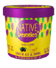
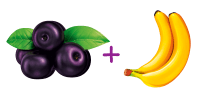

Sorbet

test

Grateful Acaí
Banana
to eat on your knees
Junte as mãos em prece e agradeça esse encontro: a fruta mais brasileira encontra o sabor da selva amazônica. Os indígenas agradecem as refeições dançando. Energia para você fazer o mesmo não vai faltar.
No script